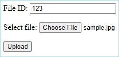

Convert Base64 to multipart/form-data with API Management

I’ve been working with Azure API Management on an integration where the client sends a JSON payload containing a base64-encoded file. The backend service that processes the file expects a multipart/form-data request, which is typically used in HTML form uploads.
In this post, I’ll show you how to use API Management policies to transform the base64-encoded data into a properly formatted multipart/form-data request.
Table of Contents
- Prerequisites
- Understanding multipart/form-data
- Creating the Backend Function
- Test Function with an HTML Form
- Creating the API Management Transformation
- Testing the API
- Conclusion
Prerequisites
To follow along with this post, you’ll need:
- An Azure API Management service instance
- An Azure Function App (.NET)
If you don’t have these resources yet, you can use my Azure Integration Services Quickstart template to deploy them. See the Getting Started section for instructions. During deployment, set includeApiManagement and includeFunctionApp to true. All other parameters can be set to false.
Understanding multipart/form-data
Before diving into the implementation, it’s worth understanding what multipart/form-data requests look like.
A multipart/form-data request consists of multiple sections separated by boundaries. These sections can contain form field values, files or other data types.
For example, here’s an HTML form where you can specify a file ID and select a file to upload:

When submitting this form, the browser creates a request that includes a Content-Type header specifying the type as multipart/form-data and a unique boundary string:
Content-Type: multipart/form-data; boundary=----WebKitFormBoundaryKWINm4cKboHb55vB
Here’s an example of what the request body looks like:
------WebKitFormBoundaryKWINm4cKboHb55vB
Content-Disposition: form-data; name="fileId"
123
------WebKitFormBoundaryKWINm4cKboHb55vB
Content-Disposition: form-data; name="file"; filename="sample.jpg"
Content-Type: image/jpeg
... BINARY DATA ...
------WebKitFormBoundaryKWINm4cKboHb55vB--
Each section starts with a boundary (prefixed with --), followed by headers that describe the form field. The Content-Disposition header specifies the field name and, for file uploads, the filename. File sections include a Content-Type header that specifies the media type (like image/jpeg). Text fields typically don’t include this header and default to text/plain. The actual data follows after a blank line.
The browser automatically generates a unique boundary string for each request, so the value will be different every time you submit the form.
For a deeper understanding of multipart/form-data requests, I recommend reading Reading JSON and binary data from multipart/form-data sections in ASP.NET Core by Andrew Lock. It provides excellent examples of how to construct and handle these requests in .NET.
Creating the Backend Function
Let’s start by creating an Azure Function that can receive multipart/form-data requests. This function will extract a file from the form data and return it as a downloadable file. Use the following code for the function:
using Microsoft.AspNetCore.Http;
using Microsoft.AspNetCore.Mvc;
using Microsoft.Azure.Functions.Worker;
using Microsoft.Extensions.Logging;
namespace AISQuick.FunctionApp;
/// <summary>
/// Function that receives a file as part of a multipart form data request
/// and returns it as a file stream.
/// </summary>
public class ProcessFileFunction
{
private readonly ILogger<ProcessFileFunction> _logger;
public ProcessFileFunction(ILogger<ProcessFileFunction> logger)
{
_logger = logger;
}
[Function(nameof(ProcessFileFunction))]
public async Task<IActionResult> Run(
[HttpTrigger(AuthorizationLevel.Anonymous, "post", Route = "process-file")] HttpRequest request)
{
try
{
// 1. Read the form data
var formData = await request.ReadFormAsync();
// 2. Extract the file ID from the form data and log it
string? fileId = formData["fileId"];
_logger.LogInformation("File ID: {FileID}", fileId);
// 3. Extract the binary file from the form data. Throw an exception if it's not present.
var file = request.Form.Files["file"];
if (file == null)
{
return new BadRequestObjectResult("File not provided.");
}
// 4. Log the file details
_logger.LogInformation("File Name: {FileName}, Content Type: {ContentType}, Size: {Size} bytes",
file.FileName, file.ContentType, file.Length);
// 5. Return the file as a stream.
var stream = file.OpenReadStream();
return new FileStreamResult(stream, file.ContentType)
{
FileDownloadName = file.FileName
};
}
catch (Exception ex)
{
// If something goes wrong, return the exception details.
// Don't do this in production code, as it can expose sensitive information.
return new ContentResult
{
StatusCode = StatusCodes.Status500InternalServerError,
Content = ex.ToString(),
ContentType = "text/plain"
};
}
}
}
This function does the following:
- Reads the form data from the incoming request
- Extracts the
fileIdfield and logs it - Retrieves the uploaded file and validates that it is present
- Logs the file details
- Returns the file as a downloadable stream
Deploy this function to your Azure Function App before proceeding to the next step.
Test Function with an HTML Form
Let’s test our function with a simple HTML form. Create a new HTML file using the sample below or download the HTML file here:
<!DOCTYPE html>
<html lang="en">
<head>
<meta charset="UTF-8">
<title>Upload File</title>
</head>
<body>
<form action="https://<your-function-app-name>.azurewebsites.net/api/process-file" method="post" enctype="multipart/form-data">
<label for="fileId">File ID:</label>
<input type="text" id="fileId" name="fileId" required>
<br><br>
<label for="file">Select file:</label>
<input type="file" id="file" name="file" required>
<br><br>
<button type="submit">Upload</button>
</form>
</body>
</html>
Update the action attribute in the HTML form to point to your Function App URL by replacing <your-function-app-name> with your actual Function App name.
Open the HTML file in your browser, enter a file ID and select a file. The form will look like this:
To see how the multipart/form-data request is structured, open your browser’s developer tools before submitting the form. When you submit the form, you should see the file downloaded back to your browser. In the Network tab, you can inspect the request structure - it will look similar to the example shown in the Understanding multipart/form-data section.
If you have Application Insights configured, you can also check the logs to see the file ID and file details being logged by the function.
Creating the API Management Transformation
Now let’s create an API in API Management that transforms a JSON request with base64-encoded content into the multipart/form-data format our function expects.
Navigate to your API Management instance in the Azure portal and create a new API based on OpenAPI. Use this OpenAPI specification. This will create an API called ‘Convert File API’ with a ‘Convert a Base64-encoded file’ operation. It expects a JSON request with the following structure:
{
"id": "12345",
"name": "sample.jpg",
"mimeType": "image/jpeg",
"base64Content": "...BASE64_CONTENT..."
}
We’ll transform that JSON request into a multipart/form-data request with these parts:
fileId: The ID from the JSONfile: The binary file data with proper metadata
Here’s how to set up the transformation for the ‘Convert a Base64-encoded file’ operation. Open the policy editor for this operation and add the following policies to the `inbound`` section:
-
Configure the backend to forward the request to the Azure Function:
<set-backend-service base-url="https://<your-function-app-name>.azurewebsites.net" /> <rewrite-uri template="/api/process-file" copy-unmatched-params="false" />Replace
<your-function-app-name>with your actual Function App name. -
Set the Content-Type header to multipart/form-data with a boundary:
<set-header name="Content-Type" exists-action="override"> <value>multipart/form-data; boundary=b5f36865-8df9-4d14-8d2c-4ae2eb78d0ec</value> </set-header> -
Transform the request body from JSON to multipart/form-data:
<set-body>@{ // The Process File function expects a multipart/form-data request with the following parts: // - fileId: string - Id of the file to be processed // - file: string($binary) - The file that is to be processed // // We're not constructing the entire request as a string where the file contents is converted using Encoding.UTF8.GetString(), // because that would corrupt the binary data of the file. var request = context.Request.Body.As<JObject>(); string id = request.Value<string>("id"); string name = request.Value<string>("name"); string mimeType = request.Value<string>("mimeType"); // Convert file to binary data string base64Content = request.Value<string>("base64Content"); byte[] binaryData = Convert.FromBase64String(base64Content); var formData = new List<byte>(); // Part 1: file id AppendLine($"--b5f36865-8df9-4d14-8d2c-4ae2eb78d0ec"); AppendLine("Content-Disposition: form-data; name=\"fileId\""); AppendLine(""); AppendLine(id); // Part 2: file metadata AppendLine($"--b5f36865-8df9-4d14-8d2c-4ae2eb78d0ec"); AppendLine($"Content-Disposition: form-data; name=\"file\"; filename=\"{name}\""); AppendLine($"Content-Type: {mimeType}"); AppendLine(""); // Part 3: file content (raw bytes, not base64) formData.AddRange(binaryData); AppendLine(""); // End boundary AppendLine($"--b5f36865-8df9-4d14-8d2c-4ae2eb78d0ec--"); return formData.ToArray(); // Helper methods to add strings with proper encoding void AppendLine(string s) { AppendString(s + "\r\n"); } void AppendString(string s) { formData.AddRange(Encoding.UTF8.GetBytes(s)); } }</set-body> -
Save the changes to apply the transformation.
You can find the complete policy XML here.
Understanding the Transformation
The transformation from JSON to multipart/form-data requires careful handling of both text and binary data. Unlike in .NET where you can use MultipartFormDataContent to construct these requests easily, API Management policies require manual construction of the entire request body.
Here’s what happens step by step:
1. JSON Parsing and Data Extraction
var request = context.Request.Body.As<JObject>();
string id = request.Value<string>("id");
string name = request.Value<string>("name");
string mimeType = request.Value<string>("mimeType");
string base64Content = request.Value<string>("base64Content");
byte[] binaryData = Convert.FromBase64String(base64Content);
The policy first parses the incoming JSON request and extracts all the required fields. The base64-encoded file content is converted to binary data.
2. Boundary Management
The boundary b5f36865-8df9-4d14-8d2c-4ae2eb78d0ec serves as a delimiter between different parts of the multipart request. Each section starts with -- followed by the boundary, and the final boundary is surrounded by -- on both sides to indicate the end of the request.
I’ve chosen a static boundary for readability, but you can generate a unique boundary for each request.
3. Building the Form Data Structure
The policy constructs the multipart request by appending data to a byte array:
- Text Field (
fileId): Simple form field with just the Content-Disposition header - File Field (
file): More complex field that includes:- Content-Disposition header with field name and filename
- Content-Type header specifying the file’s MIME type
- The actual binary file data
4. Binary Data Preservation
The critical aspect of this transformation is preserving binary integrity. Instead of converting everything to strings (which would corrupt binary data using UTF-8 encoding), the policy:
- Converts text portions to UTF-8 bytes using
Encoding.UTF8.GetBytes() - Appends raw binary data directly using
formData.AddRange(binaryData) - Returns the final result as a byte array
Testing the API
You can test the API using an HTTP client.
Download this test HTTP file and replace <your-apim-service-name> with your API Management service name.
If you specified an API URL suffix when creating the API, be sure to include it in the request URL.
Send the test request and verify the image is returned correctly.
If you receive a 401 Access Denied error, add a subscription key to the request or configure the API to allow anonymous access.
Content Validation
For production use, consider adding content validation to protect against large files:
<validate-content unspecified-content-type-action="prevent" max-size="4194304" size-exceeded-action="prevent">
<content type="application/json" validate-as="json" action="prevent" />
</validate-content>
This policy restricts uploads to 4MB, which is the maximum value allowed for the max-size attribute in API Management.
If you want to allow larger files, set size-exceeded-action to ignore.
Conclusion
Using API Management policies, we can transform JSON requests with base64-encoded files into multipart/form-data requests that backend services expect.
While this process is more complex in API Management than in .NET, where you can use built-in helpers like MultipartFormDataContent, it is still achievable with careful policy design.
The key benefits of this approach include:
- No code changes are required on the client side
- Proper handling of binary data without corruption
- Centralized transformation logic in API Management
- Support for different file types and metadata
You can find the complete sample code in my Azure APIM samples repository.